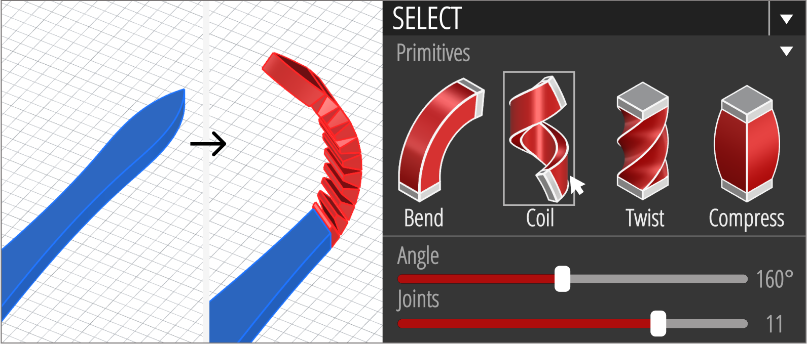
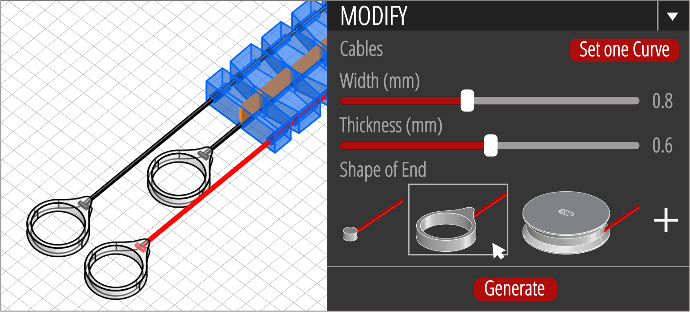
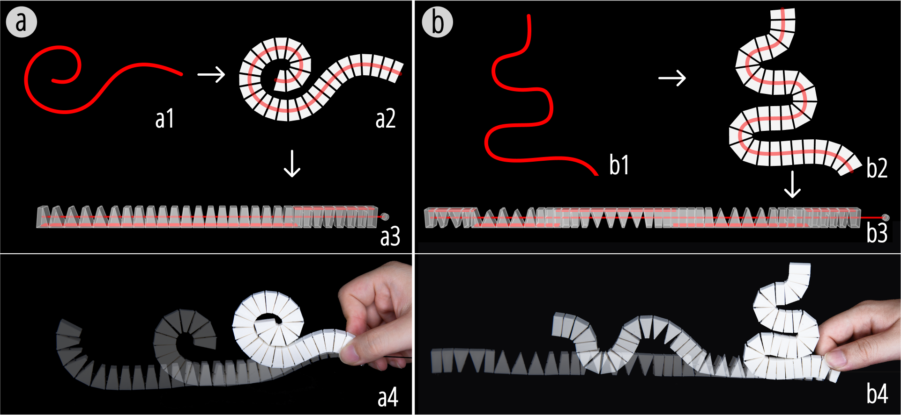

DOI PDF Video Video Press Slides


Xstrings: 3D Printing Cable-driven Mechanism for Actuation, Deformation, and Manipulation
Figure 1. Four 3D-printed objects demonstrating applications of Xstrings, including (a) multi-directional tentacle manipulation, (b) a claw with embedded actuation, (c) a bio-inspired lizard robot, and (d) a dynamic wall sculpture.
ABSTRACT
In this paper, we present Xstrings, a method for designing and fabricating 3D printed objects with integrated cable-driven mechanisms that can be printed in one go without the need for manual assembly. Xstrings supports four types of cable-driven interactions—bend, coil, screw and compress—which are activated by applying an input force to the cables. To facilitate the design of Xstrings objects, we present a design tool that allows users to embed cable-driven mechanisms into object geometries based on their desired interactions by automatically placing joints and cables inside the object. To assess our system, we investigate the effect of printing parameters on the strength of Xstrings objects and the extent to which the interactions are repeatable without cable breakage. We demonstrate the application potential of Xstrings through examples such as manipulable gripping, bionic robot manufacturing, and dynamic prototyping.
INTRODUCTION
Prior HCI research has focused on integrating mechanisms into physical objects to enable the creation of dynamic, articulated, and shape-changing structures. To achieve different types of dynamic interactions, researchers have explored various mechanisms to support compliant, elastic, bi-stable, and shape-memory fabrication, allowing users to customize dynamic devices and tangible interfaces.
In parallel, cable-driven mechanisms have emerged as a cornerstone of modern robotics, where the delicate interplay of cables to transmit forces and motions offers a unique blend of precision and adaptability. Their inherent lightweight nature and flexibility make them indispensable in diverse applications, ranging from robotic actuation to the development of intricate control systems. For instance, Nikafrooz et al. designed a robotic hand with cables embedded in each finger to mimic the function of tendons, while Colan et al. leveraged similar principles in crafting advanced surgical tools.
Despite their advantages, cable-driven mechanisms can be inherently challenging to design for less experienced 3D-printing users. Achieving a specific desired motion requires precise positioning of cables and their connection points within the geometry of a larger structure, as well as the careful adjustment of tension levels in these cables. To streamline the design process of such complex mechanisms, researchers have developed various optimization algorithms. For example, Megaro et al. and Li et al. introduced optimization-based methods for the inverse design of cable-driven kinematic chains and trees. These methods have demonstrated the capability to generate a wide range of output motions, including realistic character animations and the development of actuated grippers, thereby expanding the versatility and application potential of cable-driven systems.
Although existing design tools provide optimization solutions for cable layouts to achieve the desired motion of an object, the fabrication of such cable-driven mechanisms remains a challenging manual task. This process often involves creating numerous small holes, meticulously threading cables through these holes, and tying knots at precise locations, an effort that is both time-consuming and labor-intensive. Furthermore, the hand-crafted nature of these mechanisms poses significant challenges in achieving the precision required for developing systems with accurate motion trajectories, limiting reproducibility and consistency when producing identical copies of the same structure.
Figure. Embedding cable-driven mechanism with the Xstrings workflow.
To address these challenges, we present Xstrings, a method that integrates cable-driven mechanisms with 3D object geometries for one-step fabrication using dual-material FDM 3D printing. Xstrings supports four types of cable-driven interactions—bend, screw, coil, and compress—activated by input force on the cables. To simplify the design process, we also present a tool that allows users to embed these mechanisms into objects by automatically placing cables and joints based on the desired behavior of the object. This approach automates the creation of cable-driven mechanisms, without long production times or manual labor, while maintaining their precision.
We evaluate Xstrings through several experiments. First, we measure its time-efficiency by comparing it to manual cable-driven object assembly over four participants, finding that Xstrings reduces assembly time by 40%. Additionally, we examine the impact of printing parameters such as temperature and speed on cable quality, testing maximum tensile strain and interaction repeatability. Finally, we showcase the potential applications of Xstrings with a diverse set of 3D-printed examples, including dynamic fashion, bionic robotics, and interactive prototyping, highlighting how Xstrings accelerates fabrication for both novice and expert users.
In summary, our contributions are as follows:
• An automated, one-step fabrication approach for 3D printing cable-driven mechanisms, by printing embedded cables, objects, joints, and linkages all at once without the need for manual assembly.
• An interactive design tool that incorporates cable-driven mechanisms into a target structure by decimating it into a user-defined number of links, integrating four different motion primitives (bend, coil, screw, and compress) to approximate the target structure, and fosters creativity, exploration, and accessibility to cable-driven prints.
• A technical evaluation to determine how 3D printing parameters (printing temperature, extrusion, density, and print path) affect the fatigue and maximum tensile strain of the printed cables.
• A variety of 3D-printed example applications that demonstrate the use of Xstrings cable-driven mechanisms, including gripping devices, bionic robot manufacturing, and dynamic prototyping.
The creation of 3D-printed cable-driven mechanisms involves three main challenges: (1) laying out the cable along the mechanism; (2) integrating joints and anchors into the print to enable the desired motion of the main structure when the cable is activated; and (3) defining suitable 3D-printing parameters.
Laying Out the Cable for the Mechanism
To begin with, we identify the key components that need to be included in an Xstrings object, referencing classic cable-driven mechanisms. Typically, there are three primary components used to connect a cable to a mechanical structure: (1) Anchor Points, (2) Threaded Points, and (3) Exposed Points, as illustrated in the example of a cable-driven finger in Figure cable-structure. Below, we introduce the characteristics of each component and provide a detailed explanation of their corresponding manufacturing techniques in Xstrings.
Figure 3. The three primary components used to connect a cable to a mechanical structure: (1) Anchor Points, (2) Threaded Points, and (3) Exposed Points.
A cable-driven mechanism aims to achieve precise real-time control of the end effector (e.g., the fingertip) using cables. Traditional methods secure cables with knots, but since 3D printers cannot tie knots, we introduce an alternative anchoring method. Instead, the cable endpoint is shaped into a T-anchor and embedded within the surrounding material, as shown in Figure cable-structure. This design firmly secures the cable without relying on thermal adhesion between different 3D-printed materials, which may lead to separation if bonding fails.
In cable-driven mechanisms, "Threaded Points" are holes in the 3D-printed structure through which a cable slides when actuated. Ensuring smooth rectilinear motion at these points is a key technical challenge. Traditionally, holes are drilled, and cables are manually threaded, but integrating this process into layer-by-layer 3D printing introduces significant issues, primarily friction and resistance between the cable and printed structure. Section threading method presents optimized printing parameters and materials, refined through G-code adjustments, to enhance cable quality and minimize friction.
To actuate a cable-driven mechanism, the cable ends must be exposed for interaction. These points serve as inputs where forces are transmitted along the cable to the anchored terminal, driving the mechanism. Common actuation methods include manual pulling, motor-driven tensioning, and gravity. 3D printing enables customization of these endpoints with terminal shapes such as pull rings, spools, or solid weights to suit different interaction needs.
3D Printing Joints for Cable-Driven Mechanisms
To actuate a cable-driven mechanism, there must also be some form of joint or compliance integrated into the larger 3D object being actuated. In the following subsection, we discuss three types of 3D-printed joints explored in our study.
Elastic Joints: 3D-printed elastic joints leverage the inherent elasticity of common 3D printing materials such as TPU and TPE. One approach to creating 3D-printable elastic joints is to modify certain areas of a 3D object printed with an elastic material to be thinner, making them capable of elastic deformation and effectively functioning as hinges. These joints can be temporarily deformed via a tensing cable and, once the tension is released, return to their original shape, releasing stored elastic energy without permanent deformation.
Compliant Joints: In 3D printing, compliant joints can be created by using an array of multiple thin filaments to form bridges between components of a structure. The stiffness of these filaments can be adjusted to achieve the desired amount of motion in the cable-driven mechanism. Similar to elastic joints, compliant joints have the advantage of simplicity, as they eliminate the need for separate moving parts. These joints are particularly well-suited for lightweight and compact applications.
Mechanical Joints: Unlike elastic and compliant joints, mechanical joints rely on assembling separate, distinct moving components of a structure. In the context of 3D printing, these joints can be fabricated using a print-in-place technique, which allows for the creation of mechanical linkages within a single print. These mechanical joints provide robust and reliable connections between components, capable of withstanding significant loads and offering precise control over the movement of large printed components.
By exploring and combining these different types of joints, we can expand the range of applications for 3D-printed cable-actuated mechanical systems and tailor our printed objects to meet the specific needs of various scenarios.
3D Printing Materials and Parameters for Threading CableAs mentioned in Section 3.1, by optimizing the print parameters and materials used for FDM 3D printing, we can create high-performance cable-actuated kinetic systems that exploit rectilinear motion between the cables and the body of the printed object. The choice of printing materials and printing parameters greatly affects the quality of the cable, which in turn impacts the motion smoothness of the entire kinetic system. As highlighted in Fig.~\ref{compair}b, we demonstrate that using default printing parameters leads to issues with 3D-printed cable-driven mechanisms, such as drooping and branching. Below, we discuss how we address these challenges through careful selection of print materials and optimization of G-code parameters before printing.
Figure 4. (a) A 3D-printed sample using Xstrings' G-code parameters, resulting in smooth motions of the centerpiece; (b) the same sample printed with default settings, causing the centerpiece to become stuck.
In our cable 3D printing tests, we identified three main issues that can directly lead to failure modes:
- Fragile cables, where the cable itself is too fragile, leading to breakage or fracture during manipulation;
- Fused materials, where the cable and mechanical components fuse together in undesired locations due to melting during 3D printing, causing separation to become impossible, thus preventing the cable from moving and actuating the mechanism;
- Irregular shapes, where the cable exhibits irregularities such as branching (a single cable into multiple threads, seen in Figure compair b2), uneven thickness, or sagging, which prevent it from passing through holes or result in excessive frictional resistance.
Resilient Cable Materials: Selecting the ideal material for 3D-printed cables involves balancing bending-resistance and the ability to withstand high tensile stress without undergoing plastic deformation or breakage. Based on filaments datasheets and printing guidelines, we chose Nylon and PC as test materials due to their excellent tensile properties. In practical tests, PC exhibited the highest tensile strength but was prone to plastic deformation and even breakage under repeated bending, making it unsuitable as a cable material. Nylon, on the other hand, demonstrated exceptional bending-resistance and maintained stability and durability under repeated bending. Among different types of Nylon (carbon fiber-filled, glass fiber-filled, PA11, PA12 et al.), we selected Nylon 66 for its superior balance of flexibility and strength, making it the most suitable material for Xstrings cables.
Figure 5. (a) A 3D-printed sample using Xstrings' G-code parameters, resulting in smooth motions of the centerpiece; (b) the same sample printed with default settings, causing the centerpiece to become stuck.
Materials and Parameters to Avoid Fusion: We print the main structure and joints using a different material than the cable to prevent fusion between the cable and surrounding geometry. If printed from a single material, the matching melting and solidification points would cause unintended bonding, making it impossible to separate components and restricting cable movement.
To mitigate this, we select materials with sufficiently different melting points. We tested cable-driven mechanisms by printing cables in Nylon while using PLA and TPU for the rest of the structure. As shown in Figure compair, these tests confirmed that cables naturally separate from their surroundings due to shrinkage or minimal manual force. Our technical evaluation (Section Evaluation) further demonstrates that adjusting the material spacing to 0.4mm in the first cable layer via G-Code editing, setting initial layer extrusion to 90%, and controlling the printing temperature (260°C for Nylon) significantly reduces unintended adhesion, ensuring cable mobility.
Printing Parameters for Cable Straightness: During FDM 3D printing, cable sections are either suspended mid-air during extrusion or rest on previously extruded layers. We observed issues such as filament sagging and cable branching, where the cable splits into thin filaments (Figure compair b2). These defects hinder smooth cable sliding and may obstruct passage through holes. Excessively high temperatures and slow speeds exacerbate sagging and fusion, as softened filament deforms under gravity.
To address this, we optimized 3D printing parameters through experiments (Figure fig:parms). For the first layer, we reduced printing speed to 20mm/s (default: 70mm/s) and set the bridging speed to 40mm/s to balance temperature and speed, minimizing drooping. The extrusion rate was adjusted to 90% to ensure horizontal bridging without sagging. For subsequent layers, we used a speed of 20mm/s for both printing and bridging, with a 110% extrusion rate to enhance layer fusion and prevent cable branching.
Evaluation: We evaluated our print parameters by comparing two versions of a cable-driven mechanism consisting of a block threaded with three freely sliding cables. One sample was printed using Xstrings' optimized G-Code parameters (Figure compair a), while the other used default printer settings (Figure compair b). Testing confirmed that our approach effectively eliminates the discussed issues, allowing smooth movement of intermediate blocks along the cables and providing reliable support for cable-driven mechanisms. Further evaluations examine cable force limits, thermal fusion of different materials, and the impact of printing parameters on cable quality through various experiments.
Figure 6. The four basic motion primitives of Xstrings: Bend, Coil, Screw and Compress.
MOTION PRIMITIVES
In this section, we formalize four fundamental motion primitives as a foundation for automating the construction of various cable-driven 3D-printable mechanisms. In mechanical engineering, a one-degree-of-freedom (one-DOF) pair is the most basic type of mechanism that enables relative motion between two components, typically classified into Revolute, Screw, and Prismatic pairs \cite{bagci1971degrees}. In cable-driven mechanisms, a single mechanical structure often integrates multiple one-DOF pairs to achieve complex motions. Based on these fundamental mechanism types, we define four key one-DOF motion primitives—Bend, Coil, Screw, and Compress, as shown in Fig.~\ref{Primitives}. These primitives encapsulate common motion patterns found in many cable-driven systems and serve as standardized building blocks for their design and fabrication.
We illustrate these motions on an input geometry of a rectangular cuboid with dimensions of 100mm in length ($L=100$mm), 15mm in width ($W=15$mm) augmented with cables, joints, gaps, and holes that allow for actuation using cable-driven mechanisms. Below, we detail the structure of these motion primitives and their corresponding designs for FDM 3D printing, and show they can be combined to achieve a large design space for XStrings objects. Later, in the Design Tool section, we show how these primitives can be parameterized and combined to create various different user-defined cable-driven motions.
Bend
The Bend Primitive, shown in Figure Primitives, comprises n joints (in our example, we set n = 12) and a single driving cable, with each pair of links allowing rotational motion between them. The rotational angle at each joint is θᵢ, which can be controlled by the size and shape of the gap between the two links. We set θᵢ = θ/n so that the total bending angle about the x-axis θ = Σθᵢ (so in our example case, θᵢ = 15°, θ = 180°). Then, by fixing one end of the primitive to the origin of the x, y, z axes, we can calculate the position of the endpoint of the bend primitive as:
Equation: (x, y, z) = (0, L/θ · (1 - cos θ), L/θ · sin θ)
This bend primitive structure is designed using the parametric design tool Grasshopper. We started the design process by generating a single triangular prism with an internal angle of θᵢ and then duplicate them n times in a linear array. We then use these triangular prism to cut the input geometry (Boolean Difference) to create n gaps on the geometry, remaining n+1 links. We also design a compliant bridging joint that connects each link in series, enabling rotational motion through the deformation of the flexible material. Finally, using the method described in Figure Primitives, holes for the cable within the links are generated to ensure that the cable can transmit force directly to the effector's endpoint, thereby driving the motion of the entire bend primitive.
Building on the Bend Primitive, we developed a Coil Motion Primitive, as illustrated in Figure Primitives, by adjusting the angles between the primitive's segments. Unlike the Bend Primitive, the gaps in the Coil form an angle φ with the y-axis direction of the input geometry. This causes the movement of the Coil to no longer directly align with the direction of the x-axis when actuated, but rather results in a non-axis aligned helical coiling motion. As each segment bends by θᵢ, the overall shape coils along the y-axis (in this case, the y-axis lines up the structure's own helical axis). The primary parameters for this coil primitive include the number of turns N, radius r, and spring length Lₛ.
Equation: (x, y, z) = (√(L² - (2πrN)²), r · cos(2πN), r + r · sin(2πN))
The workflow for 3D-modeling a Coil Motion Primitive is very similar to that for the Bend Primitive. We similarly use n triangle prisms to cut the input geometry. The difference is that, before cutting, triangular prisms are rotated by an angle of φ, creating a (90-φ) degree angle between the gap direction and the geometry's direction. On this basis, we then add cables and joints, which serve as the driving mechanism and movable structure for the entire primitive.
The Screw Primitive is structured as a spring that screws around the z-axis while simultaneously shortening its length during actuation. As illustrated in Figure Primitives, when the screw primitive is driven, it coincides the behavior of a spring that contracts in length when rotated around its own longitudinal axis.
The Screw Primitive consists of a continuous helical structure characterized by its length L, radius r, and extreme screw angle θ. The screwing motion is defined by the angular displacement of the endpoint of the structure θz around the z-axis, which causes the structure to compress Δz along its axis of rotation. As the structure screws, each incremental rotation of Δθz causes a corresponding reduction in length, given by:
Equation: Δz = L · (1 - cos(Δθz/2))
During the screwing motion, the spring rotates around the z-axis, and its position changes accordingly. The final coordinates of the effect end after a total screw angle of θt are:
Equation: (x, y, z) = (0, 0, L - Δz)
In the design of the screw mechanism, we use n cuboids of length Lᵢ to cut the input geometry so that each link is also a thin cuboid. When actuated, all the links fully align with each other. Based on this, we position four stiffer compliant joints in a circular array around the cable as the center, with a radius r. When the cable is actuated, these joints convert the force of the links moving closer together into a screwing motion, where sin θᵢ = 2·Lᵢ/r, and θz = Σθᵢ.
The compressive structure incorporates a cable into a linear track structure. We use a basic Prismatic pair with one degree of freedom, allowing only sliding motion along the z-axis. By pulling the cable, two links compress along the linear track, reducing its length by Δ = 0.5L, effectively halving its original size.
Figure 7. (a) A series sample designed with 7 Bend primitives, forming a cube frame when actuated; (b) A paralleled sample designed with 7 Bend primitives, forming a cube frame when actuated.
In this section, we describe our novel heightfield generation model. This model takes a texture image as a prompt and generates the associated heightfield. For this purpose, we fine-tune a trained diffusion-based Image-to-Image model and integrate it into the TactStyle system. In the following subsections, we describe the modified architecture of the diffusion model and the dataset used to train and test the system.
Dimensional Combination of Primitives
By combining these primitives in series or parallel, we can create complex, adaptive 3D-printed structures tailored to specific functional requirements, demonstrating the versatility and potential of cable-driven mechanisms in soft robotics and advanced manufacturing.
Series Combination
In a series combination, multiple primitives are connected in a sequential manner and driven by a single cable. Cable actuation begins from the farthest end of the mechanism and propagates toward the base, causing cascading deformation along the sequence.
The advantage of the series combination lies in its ability to achieve complex, coordinated movements with minimal control input. Since only one cable is required to drive all connected primitives, the design of sequential mechanisms is more straightforward and compact than that of parallel mechanisms. This approach is ideal for applications requiring sequential motion of segments of an object, including robotic arms, tentacle-like structures, or bio-inspired soft robots where precise control over motion propagation is necessary (an example of this is given in Section fashion).
Mathematically, the total driving force and deformation in a series can be mathematically represented as:
Equation: F_total = F_i + Σ F_c,resistance, ΔL_total = Σ ΔL_i
where ΔL_i is the displacement of the i-th primitive along the x, y, and z axes, respectively.
An example of a series mechanism is shown in Figure series and parallel (a). We combine seven bend primitives in series to form a long strip-shaped object, where each bend primitive is capable of bending 90 degrees and can bend in different directions. All these primitives are then controlled by a single cable. As shown in Figure series and parallel b, c and d, by pulling the cable, this long strip-shaped object will eventually form a square.
Parallel Combination
In a parallel combination, the main cable splits into multiple sub-cables, each connected to a different primitive, but all driven synchronously by a single "central" actuator. This design allows multiple sections of the mechanism to move simultaneously, providing synchronized actuation across all primitives.
The advantage of the parallel combination lies in its ability to achieve simultaneous, coordinated movements, enabling faster and more responsive actuation. This method is ideal for applications that require uniform or synchronized deformations, such as multi-fingered grippers, adaptive surface actuators, or morphing structures.
The synchronization of the sub-cables can be controlled by a central axis, and the relationship between the driving force and the actuation can be mathematically represented as:
Equation: F_total = Σ F_j, ΔL_total = ΔL_j
where F_total is the total force applied by the main cable, F_j is the force transmitted through each sub-cable, and ΔL_j is the deformation length of the j-th primitive.
We demonstrate a parallel combination in Figure series and parallel (b). We create a gripper object that consists of a handle with five bending structures forming a star shape at the end. Each of the bending structures is controlled by a different cable, and these five cables are connected in parallel. This means that controlling the final single joining cable can cause all five bending structures to deform simultaneously. As shown in Figure series and parallel b1, b2 and b3, when this joined parallel cable is pulled by hand, all five bending structures move simultaneously.
Hole Placement and Joint Design
When determining the placement of threaded points and cables relative to the joints in a structure, their effect on system stiffness must be considered. If the threaded points are placed close to the joints, the moment arm is shorter, requiring greater force to generate the same torque, thereby increasing system stiffness. Conversely, positioning the threaded points farther from the joints reduces stiffness.
Anchor Point Placement: The placement of anchor points influences system stiffness by altering the moment arm length. A shorter moment arm requires greater force to achieve the same deformation, increasing stiffness, while a longer moment arm decreases stiffness. Assuming a force F_c applied at the end effector, a total structure length L, and a hole-to-hinge distance d, stiffness k follows the relationship:
Equation: k = F_c/δy, δy ∝ d
where δy represents vertical deformation at the endpoint. Thus, stiffness decreases as d increases, meaning that placing holes farther from the joints reduces system stiffness.
Joint Design: The stiffness of joints is determined by the spring constant k_i. Since the joints are in series, their equivalent stiffness k_joints is given by:
Equation: 1/k_joints = Σ(1/k_i)
Higher joint stiffness contributes to greater overall system stiffness, making it crucial to optimize joint material and structure according to design requirements.
Figure 8. Illustration of the Xstrings system and mechanical setup.
The joint type determines k_n and affects the total joint stiffness, k_joints. Elastic joints provide high stiffness with nonlinear deformation under strain, enabling energy recovery after actuation. Compliant joints offer moderate stiffness and predictable deformation, ideal for lightweight, compact mechanisms. When composed of multiple small bridges in parallel, the joint stiffness equals the sum of the bridges' stiffness. Mechanical joints contribute the lowest stiffness.
Threading Hole Geometry: Threading hole geometry minimally affects stiffness if the hole diameter exceeds the cable diameter. Smaller holes shift F_c from a point force at the end effector to a distributed force along the structure, altering bending dynamics and compromising the mechanism. Optimizing hole geometry ensures smooth cable sliding and consistent force transmission (see Section 8.4).
Shapes
Compared to traditional cable-driven mechanisms, the customization capabilities of 3D printing allow for the fabrication of cables with various shapes, offering greater design flexibility. In Figure cable-shape, we present two distinct cable shapes designed to provide haptic feedback and motion control, respectively.
Figure 9. Two distinct cable shapes designed to provide haptic feedback and motion control.
The cable in Figure cable-shape a is designed in a wave-like shape. As it passes through a component's hole, each peak of the wave collides with the underneath bump inside the hole, which perform a haptic feedback. This design provides a segmented tactile sensation during pulling, enabling users to perceive the distance of the cable actuation.
Inspired by the design principles of zip ties, Figure cable-shape b features sharper angles at the bends. When pulled and engaged with the underneath ratchet teeth, the cable interlocks with them, preventing reverse movement. The lock can be released by moving the white component downward, allowing for a uni-directional mechanism that can mimic complex motions, such as a snake coiling or a hand grasping. The potential design opportunities enabled by such a uni-directional motion mechanism are explored in greater detail in Section claw.
Embedded-cable Actuation
In our regular cable-driven mechanism design, objects are actuated by pulling on or manipulating the exposed ends of the cables. However, Xstrings' integrated printing technology enables actuation methods that do not require direct manipulation of the cable endings. We refer to this actuation technique as embedded-cable actuation.
Figure 10. A sample of a 3D-printed spine with embedded cable actuation, where one of the ends of the spine moves when the opposite end is actuated.
As shown in Figure 10, the structure contains two segments of spinal-like structures on the left and right, each embedded with three cables and hinge joints, forming an interlinked mechanism. When the middle section is fixed in place, any deformation applied to the tail end results in an opposite deformation at the head end (Figure 10 b and c), and vice versa. When the cable ends are exposed, manually controlling the three cables separately to direct the head in a specific direction or perform complex movements, such as swinging or looking around, is quite counterintuitive. The structure design enabled by Xstrings adds possibilities for more natural methods of interaction with multi-axis cable-driven mechanisms and provides a more efficient manufacturing approach for cable-driven embedded interlinked mechanisms. We will illustrate the use of this technique in an application in 7.4.
DESIGN TOOL
Xstrings software uses Rhinoceros 8 as the design environment and Grasshopper as both a computational tool and an intermediary user interface. In broad terms, the user workflow is as follows: input a geometry for embedding cable-driven mechanism; select desired primitives and define the number of segments and specify the angle after deformation; set a curve as input of cable and tune the cable width and shape of end; export and preview the results and generate the printing file.
USER WORKFLOW
Embedding Primitives: After inputting a geometry drawn in the Rhinoceros environment, users can select a primitive from our library (as shown in Figure ui). The main interface will display the currently edited segment (shown in red) and the other segments (shown in blue). By adjusting the sliders in the interface, users can edit the bending degree and the number of segments of the actuated shape. We provide some pre-tested initial values as references to help users achieve some of our primitive examples. Once users have implemented a primitive in a specific segment, they can add new segments to achieve other primitives. In Figure ui, the tip of the tentacle is designed as a coil primitive, while the body is designed with bend primitives to both left and right, respectively.
Figure 11. Primitives Embedding process in Xstrings system.
Modifying the Cable: In this step, users can specify the parameters for each cable, including its shape, width, and thickness, based on the estimated maximum force exerted by the objects. The Xstrings system will then automatically generate a T-shaped anchor point to attach the cable to the furthest end of the end effector. For the threaded points, the design tool offsets the cable's surface by 0.5mm and uses a Boolean difference to create holes for all threaded components. This parametric modeling process maintains a 0.5mm distance between the cable and the wall of the hole, reducing friction while still providing enough control over the cable's path during manipulation. For the exposed points, we offer three types of shapes: (1) Dot and (2) Ring, which are designed for manual manipulation; and (3) Spool, which can be directly connected to a servos and controlled electrically.
Figure 12. Cable Modifying in Xstrings system.
Printing Settings for different parts: To increase compatibility and enable the integration of cable-driven mechanisms on any multi-material 3D printer, we opted not to generate G-code for a specific printer model. Instead, we provide parameter settings for different slicing software. We have successfully implemented this functionality on three types of printers: Ultimaker S5, Ultimaker 3, and Bambu X1. The output files will include three separate files: Main (PLA), Cable1 (Nylon), and Cable2 (Nylon). In our example, "Main" represents the main body of the tentacle, "Cable1" is the first layer of all cables, and "Cable2" represents the remaining layers of the cables. Using the Ultimaker S5 settings as an example, the "Main" part is printed with the settings recommended by the PLA material supplier; "Cable1" is printed at 90% flow rate, 20mm/s regular speed, and 40mm/s bridge wall speed; "Cable2" is printed at 20mm/s speed with a 110% flow rate. (Parameters for other FDM 3D printer are provided in the appendix.) After slicing and exporting the files, the print can be completed. The manipulation scenarios are shown in Figure tentacle.
INVERSE DESIGN
Beyond embedding basic primitives, Xstrings can manipulate elongated blocks into arbitrary 2D curves. In cable-driven robotics, achieving complex curve motions often requires multi-segment control systems, involving multiple motors and cable drive mechanisms connected to various positions. These systems are often large and require complex, labor-intensive assembly processes. To simplify this, Xstrings introduces an automated cable-driven mechanism design tool that enables users to intuitively design such mechanisms using predefined primitives. Our approach abstracts away the complexities of designing individual surface geometry features—such as holes and joints—by generating them automatically. This allows the entire mechanism to be 3D printed in a single step, streamlining the fabrication process.
Figure 13. Inverse design resulting from two different input curves: (a) a spiral shape, and (b) a serpentine shape.
To abstract away the tedious low-level details of cable-driven mechanism design, we developed an automatic inverse design algorithm that transforms user-input curves into segmented polylines to define the shape of their structure. We do this by replacing each polyline with a series of blocks that are unfolded into straight strip, as illustrated in Figure Inverse design, and connected with cables and hinge joints.
We use our inverse algorithm to automatically determine the positions of the joints, the gap sizes and the angles. This process ensures that the resulting driven shape and curvature match the user's input precisely. Figure Inverse design shows two such printed strips generated from user-defined input curves that are then converted into segmented strips and laid out flat, such that when actuated they deform back into the shape of the original input curve.
Multi-Directional Tentacle Actuation
As mentioned in the previous section, we utilized the design tool to fabricate a controllable tentacle, which consists of 28 components and is printed at the maximum diagonal length (352 mm) of the 3D printing platform. This mechanism incorporates three cables that control the structure to bend left, coil at the tip, and bend right, respectively (as shown in Figure tentacle b1, b2, and b3).
Figure 14. (a) A one-step-printed Xstrings tentacle in its initial position. (b) Controlled movements showing the tentacle's ability to perform bend and coil motions through different cable manipulation. (c) Application scenarios of the tentacle manipulating and grasping objects.
Due to the real-time responsiveness and accuracy of cable-driven tip control, the tip's coiling action enables better interaction with objects, such as grasping a pencil and wrapping a finger. The design of linked joints allows for precise control of the tip's spatial position, helping it to locate and drag objects more accurately. This case demonstrates how Xstrings utilizes cable-driven mechanisms in 3D-printed dynamic structure to achieve complex motions, providing next-level control and interactivity for FDM 3D printing.
Bio-Inspired Lizard Robot
In tasks such as exploring unknown areas, environmental modeling, and emergency assistance, multiple robots can work collaboratively to quickly accomplish complex operations. However, most current bio-inspired crawling robots, while having significant advantages in traversing complex and diverse terrains, are limited in their widespread application and mass production due to high manufacturing costs and complex production processes.
Figure 15. (a) A print-in-place Xstrings lizard robot with biomimetic locomotion. (b) The robot connected to a Micro Servo Motor (SG90 9G). (c1-c2) Snapshots of the robot's motion showing its body bending and screwing. (d) The structural diagram with screw and bend primitives.
To address this issue, we propose a low-cost bio-inspired lizard robot design based on the Xstrings cable-driven mechanism, as shown in Figure lizard. This robot can be actuated electronically to mimic natural locomotion by alternately bending its body left and right while lifting its back legs. Such movements create a shuffling motion that utilizes surface friction and shifts the center of mass, propelling the robot forward. The precise cable actuation enables the robot to navigate narrow spaces and various terrains effectively. This approach, using a print-in-place manufacturing method and economical components—costing only $1.90 for the motor and $0.40 for the printing material, provides a possible solution for mass production of cable-driven mechanism.
Fashion and Art Design
3D printing has been widely embraced by artists for sculptures, clothing, jewelry, and other fashion pieces. Herschel Shapiro's static wall sculptures, known for their repetitive and varied designs, have garnered significant attention. Xstrings extends these artistic possibilities by introducing assembly-free, cable-driven movable structures.
Using Xstrings, we designed and fabricated a dynamic wing-shaped sculpture (Figure wallpaper) that features seven parallel arrays of eight curved plumes. These plumes are driven by a single cable actuating eight bending primitives via a rotating disk. When the disk rotates, the plumes rise from flat to upright, evoking imagery of porcupine spines or bird feathers. Printed with dual-color Silk PLA Filament, the plumes transition from blue to purple as they move, showcasing Xstrings' potential for creating interactive, visually striking art. Beyond art, such structures could also be applied in scenarios like MetaReality, where they enable customizable and dynamic haptic feedback for VR/AR environments. Our approach offers similar potential for the advancement of physical interfaces, providing a rapid single-step 3D printing method that eliminates the need for manual assembly and enhances the user experience.
Figure 16. An Xstrings dynamic sculpture, actuated with a rotatable disk.
Claw with Embedded Actuation
We designed a cable-driven bird claw with an embedded actuation mechanism to fully explore the Xstrings design and fabrication space. This design integrates the actuator into the claw's elbow for an ultra-lightweight design, converting forces into gripping motions—ideal for aerial applications.
Figure 17. (a) An Xstrings claw, featuring four fingers with compliant joints and an elbow with a mechanical joint. (b) Display of the claw fingers in open and closed positions. (c) The operation of the claw grasping an object by bending the elbow to drive the cable. Due to the ratchet design of the cable, the claw does not release during this process.
In specific, this print-in-place structure consists of four fingers, each composed of five series of bending primitives connected by compliant joints. The four fingers are arranged in a parallel configuration and actuated by a single cable. In addition, there is a mechanical joint lower in the arm of the claw, allowing the elbow of the structure to bend. This is a fully embedded, self-contained mechanism (as described in Section 5.3), so instead of the user or a motor directly engaging with the exposed cable, the bending of the elbow itself pulls on the cable, causing the claw to grip. This design allows the user to pick up and transport objects by applying a single force to the elbow of the arm. Due to the ratchet design of the cable shape (Section 9), the bird claw only tightens and does not release during this process, ultimately achieving a firm grip on the object.
We next address the limitations within our work and explore potential directions for future research.
Compatibility of Xstrings with Manual Modifications and Iterations
Xstrings provides an end-to-end manufacturing solution for cable-driven mechanisms while supporting manual adjustments and repairs during prototyping. Such interventions align with user intuition, fostering creativity and enabling design exploration.
The thermoplastic properties of PLA facilitate modifications. For example, as shown in Figure tinker, a damaged cable in a tentacle prototype was repaired by melting PLA with a soldering iron to create a knot-compatible hole, adding a new knotting point 2 mm from the original loop. These adjustments kept the prototype functional, avoiding waste. Users can also close holes, reshape surfaces, or add metallic components, enhancing versatility.
Xstrings enables efficient manufacturing while allowing users to repair and adjust prototypes, extending their lifespan, improving sustainability, and encouraging creative iteration.
Figure 23. One of a prototype's cable is replaced with fishing string by manual tinkering.
Only Flat-planar Cables
Despite Xstrings' significant advancements in the automated integration of cable-driven mechanisms into 3D objects, our current approach is limited by the constraints of 3D printing technology. Specifically, the cables in Xstrings can only be printed on the (x,y)-plane. This limitation stems from the extrusion process of FDM 3D printers, where cables need to be printed layer by layer. Stacking material along the z-axis makes the cable very fragile due to the inadequate interlayer bonding strength of nylon, which is insufficient to withstand repeated tensile forces. Thus, printing high-performance cable materials in three-dimensional space becomes challenging.
As a result, our current approach restricts cable paths to the printing plane to ensure the stability and precision of embedded cable-driven mechanisms. Although the cable layout is planar, the actuated objects can still move in multiple dimensions. Future work could explore advanced multi-axis 3D printing techniques or customized G-code manufacturing methods to overcome this limitation, enabling more diverse and spatially complex cable-driven mechanisms.
Generalizability to Other FDM Printers
The extent to which Xstrings results can be directly applied to other users' set-ups is conditional on the selection of printing material and printer model. Our evaluation establishes explicit parameter mapping to our 3D printer (Ultimaker and Bambu) and material choice (Nylon 66, yxpolyer). Users may need to perform some calibration steps to precisely align the printing parameters of their specific fabrication set-up to Xstrings's mechanical properties.
CONCLUSION
We present Xstrings, a novel approach to 3D printing cable-driven mechanisms, which integrates cable-driven systems directly into the geometry of 3D-printed objects, simplifying their fabrication process. Unlike traditional methods that require labor-intensive manual assembly, Xstrings automates the design and fabrication, supporting four types of cable-driven interactions—bend, twist, coil, and compress—using dual-material FDM 3D printing. It enables rapid prototyping and the production of complex dynamic structures without the need for additional assembly.
Xstrings demonstrates its versatility through various applications, such as dynamic fashion accessories, bionic robots, and adaptive prototypes. The technical evaluations we present highlight the effectiveness of different printing parameters in optimizing the mechanical properties of the embedded cables, addressing challenges related to tensile strain, repeatability, and material fusion. The design tool we developed as part of this method facilitates user-friendly integration of cable-driven mechanisms, allowing for customizable designs suited to a wide range of practical applications.
Overall, Xstrings presents a significant advancement in personal fabrication and robotics, offering a low-cost, efficient, and scalable solution for creating dynamic 3D-printed objects with integrated motion capabilities.
This research was supported, in part, by a postdoctoral research fellowship from Zhejiang University, and the MIT-GIST Program.